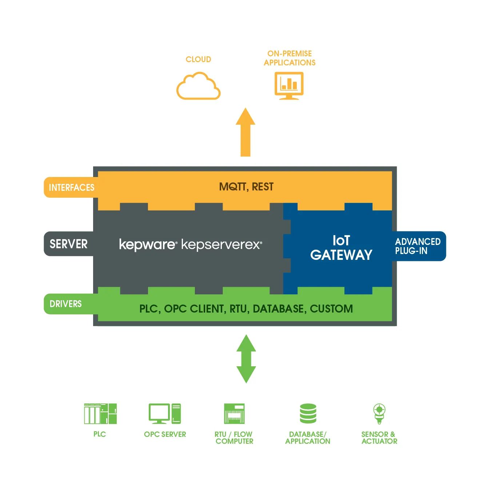

Bring your OPC-UA tags to the cloud with AWS IoT and Kepware
Today I would like to introduce you to a set of nice functionalities of both Kepware and AWS.
We all have of favorite OPC server depending on the task, but for me, it is Kepware without a doubt. No, I’m not sponsored, I just love it! The nice thing about OPC servers is usually that they cover way more communication protocols and allow us to connect to otherwise non-OPC compatible machines.
Connecting your on-premises OPC server to the cloud
Now with all these collecting capabilities, we need to be able to store, analyze, and display such data. There is of course some powerful tool to do this such as historians like Osi Pi, but what would be nice is if we could set up as a scalable solution within minutes with unlimited integration and that’s where cloud solution comes handy.
Luckily for us, Kepware got us covered and is already providing an IoT Gateway that will allow us to choose tag which should be forwarded to the cloud.
